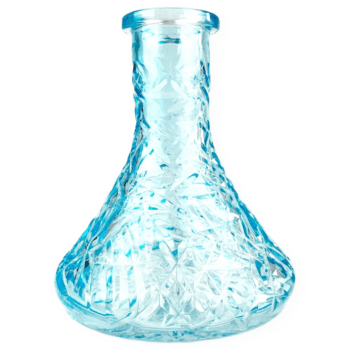
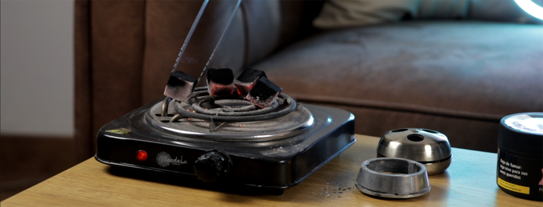

Mangueras
Las mangueras de cachimba son unos de los accesorios más importantes de tu cachimba, las mas populares son las mangueras de silicona por su facilidad de limpieza y eliminación de sabores.
Bases
Las Bases de cachimba son la parte de la cachimba que más se puede personalizar y también es una de las que más sufre. Principalmente hechas de cristal aunque pueden verse de otros materiales.
Hornillos
Encuentra entre una gran variedad de hornillos o encendedor de carbones que mejor se adapte a ti.
Productos de limpieza
Descubre una amplia variedad de productos de limpieza para la shisha, desde cepillos para mástil de cachimba o líquidos desinfectantes especiales para cachimba.
Boquillas
Puedes encontrar boquillas de todo tipo de acabado y colores y para todo tipo de cachimbas, encuentra la boquilla que mejor se adapte a tus necesidades.